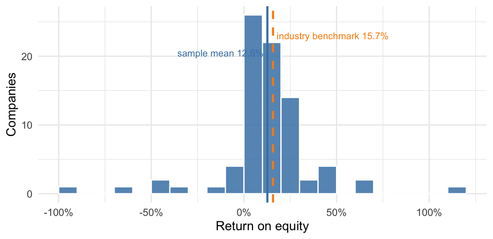
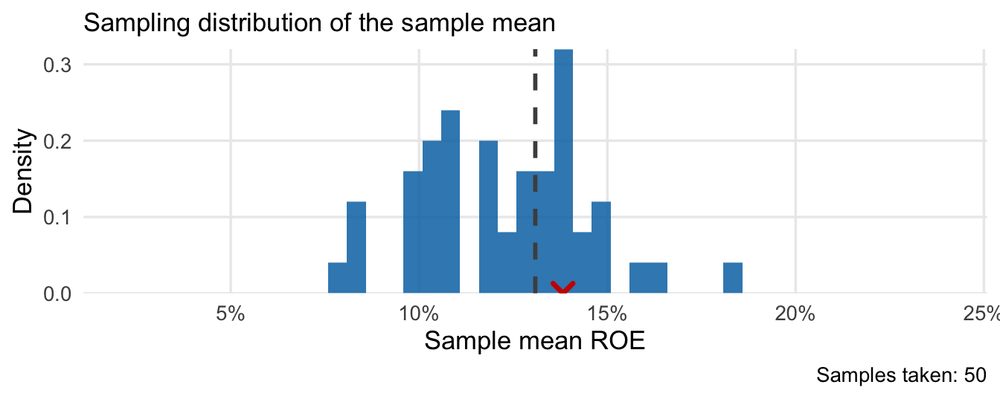
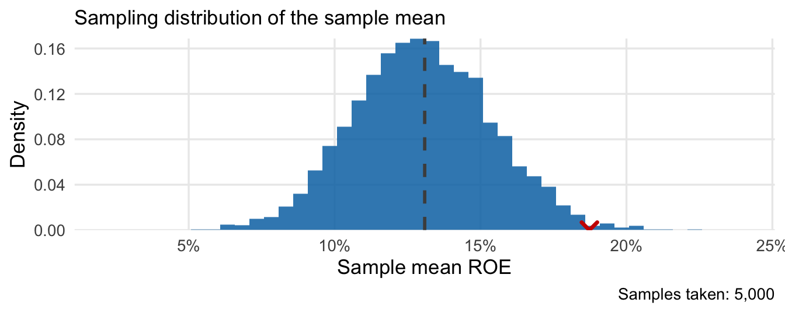
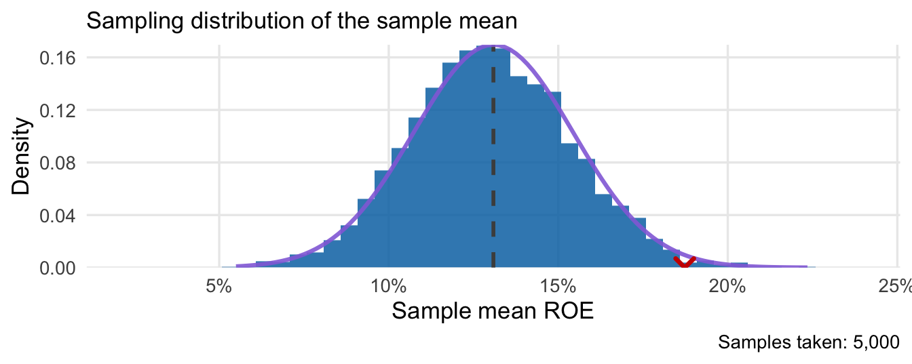
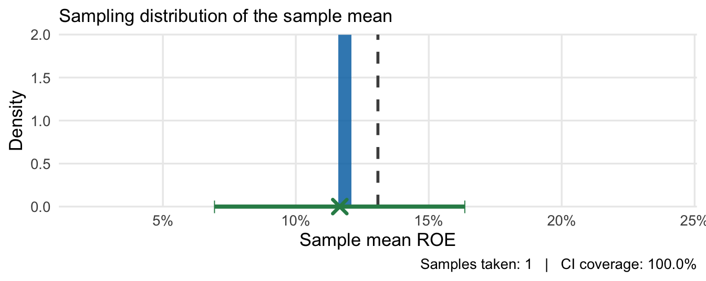
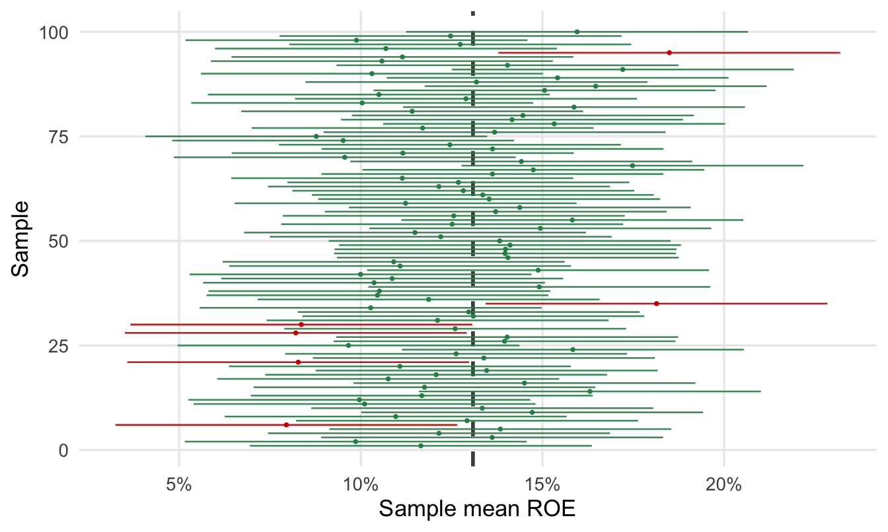
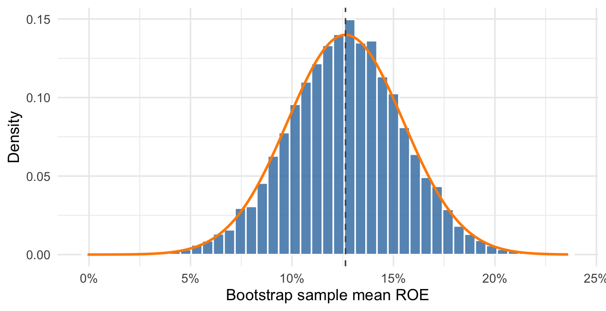

16 Sampling Distributions and Confidence Intervals
16.1 The SAP dispute
In 2005 SAP, the world’s largest maker of enterprise software, ran advertisements claiming that companies running SAP are 32% more profitable than companies that don’t. The figure came from a study SAP commissioned and never released for public scrutiny (Carr 2005, 2006). In March 2006 the analyst firm Nucleus Research published a rebuttal (Nucleus Research 2006). Nucleus built its own dataset: it collected the 81 publicly traded companies listed as customers on SAP’s web site and looked up each one’s return on equity (ROE) — annual profit as a percentage of shareholder equity, a standard measure of how profitably a company uses its capital — along with the average ROE of each company’s industry. The numbers ran the other way. The 81 SAP customers averaged an ROE of 12.6% against industry benchmarks averaging 15.7%, and Nucleus titled the report “SAP customers are 20 percent less profitable than their peers” (12.6 is about 20% below 15.7).
SAP dismissed the report as “junk science.” Its argument was about sample size: 81 companies out of SAP’s roughly 30,000 customers is about a quarter of one percent, far too few — SAP claimed — to say anything about the customer base as a whole. Who is right? Both sides are arguing about the same unknown quantity, the average ROE among all 30,000 customers. The next few chapters build the tools to say what 81 companies can and cannot tell us about it.
The sap_roe data contain the 81 companies from the Nucleus report, one row per company: its name (company), its industry (industry), its ROE in percent (roe), and the average ROE of its industry (industry_roe). The companies are household names. BMW, Caterpillar, Unilever, and Xerox all appear, spread across about 30 industries. Figure 16.1 shows the 81 ROE values along with the two averages in dispute.
The spread is the first thing to take from the figure. Company ROEs run from -91.8% up to 116.4%, with a standard deviation of 25.7 percentage points. Profitability is wildly variable, and it is natural to wonder whether the chance inclusion or exclusion of one or more of these companies could materially change our estimate of average profitability among the entire population of firms. After all, we know that the sample mean is quite sensitive to outliers.
Here is the frame we will use for the next few chapters. Among all of SAP’s customers there is some true average ROE: call it \(\mu\). We can’t compute \(\mu\) — that would require the ROE of every customer — so we estimate it with the sample mean of the 81 companies we do observe, \(\bar{x} = 12.6\%\). That 12.6% is our observed estimate. We use capital \(\bar{X}\) for the estimator: the sample mean before we know which random sample we will get. Across possible random samples, its estimation error is \(\bar{X} - \mu\). For the sample we observed, the realized error is \(\bar{x} - \mu\): how far our answer sits from the true one. We can never calculate that realized error directly, because doing so would require knowing \(\mu\). SAP’s objection, restated in these terms, is that with \(n = 81\) the estimation error is probably enormous. Nucleus clearly takes the other side, and (taken literally) their headline implies that the estimation error is irrelevant.
To reason about an error we can’t observe, we need a model for how the sample arose. For now, consider the 81 companies as a simple random sample of SAP customers: a lottery draw in which every customer was equally likely to appear. Since the population is so large, we can equivalently model the observed ROEs as realizations of iid random variables \(X_1, \dots, X_{81}\), drawn from a discrete distribution placing probability 1/N on each of the \(N\) companies in the population. The mean and standard deviation of that distribution are \(\mu\) and \(\sigma\), respectively. We made the same move in the introductory chapter, when we treated 1,000 survey responses as 1,000 draws from a probability distribution over optimists and pessimists. Here the outcome is a company’s ROE instead of a yes-or-no answer.
16.1.1 Connecting sampling from a population to sampling from a probability distribution, again
If you’re still wondering why we can treat each firm in our sample as an independent draw from a probability distribution, this section is for you. We’ll begin by drawing a single firm — \(X\) — completely at random from the population, with each company in the population equally likely to be selected. We have a single draw from the discrete probability distribution over all values of ROE in the population, given by the (large) table below.
| Company | ROE (\(x\)) | \(\Pr(X = x)\) |
|---|---|---|
| 1 | 44.3% | 1/30,000 |
| 2 | 6.3% | 1/30,000 |
| 3 | 5.1% | 1/30,000 |
| 4 | 0.9% | 1/30,000 |
| 5 | 4.5% | 1/30,000 |
| \(\vdots\) | \(\vdots\) | \(\vdots\) |
| 30,000 | -1.0% | 1/30,000 |
Using our rules for random variables, the mean of this distribution \(\mu\) is just the average of all the possible outcomes:
\[ \mu = \sum_{i=1}^{30{,}000} x_i \cdot \Pr(X = x_i) = \frac{x_1 + x_2 + \cdots + x_{30{,}000}}{30{,}000} = \frac{44.3 + 6.3 + \cdots + -1.0}{30{,}000}. \]
So our 81 firms are just 81 independent draws from this distribution. This ignores the fact that we usually wouldn’t allow sampling the same company twice when we designed a survey like this, but the population size is so large relative to the sample size that the chance of drawing the same company twice is negligible.
16.2 Sampling distributions and confidence intervals
SAP’s sample size objection is really a claim about repetition: had Nucleus drawn a different 81 companies at random, the average would have come out differently, and SAP is betting it would have come out very differently — so differently, in fact, that we can’t learn anything meaningful from a sample of size \(n=81\). There is a certain appeal to the argument: you probably wouldn’t trust a sample of three firms to learn about the whole population. On the other hand, it would be bad luck indeed if a random sample of 810 companies produced an average far from the true population average. Larger samples depend less on which firms happen to be included. How can we quantify this?
Ask the question directly. Suppose we could redraw the sample — hand thousands of analysts their own random 81 customers and have each one compute a sample mean. No two analysts would produce exactly the same estimate. Since there is no bias in the random sampling process, we’d expect that their estimates are scattered more or less randomly around the true population value. The spread of their answers tells us how reliable any single analyst’s estimate is: if the variation across random samples is small, then any single analyst’s estimate is probably close to the truth. If the variation is large, then any single analyst’s estimate could be far from the truth. The distribution of the analysts’ estimates across random samples is called the sampling distribution of the statistic:
NoteDefinition: Sampling distribution
The sampling distribution of a statistic (like the sample mean) is the probability distribution of that statistic across random samples of a given size \(n\), where each sample is drawn from the population or from the true probability distribution.
In real life we get one sample, so we never see the sampling distribution directly. But if each of our hypothetical analysts got approximately the same number, we could feel confident in the results of any single one of them.
We already know two things about this distribution exactly. The rules for sums and averages of iid random variables give \(E[\bar X] = \mu\) and \(SD(\bar X) = \sigma/\sqrt{n}\). The Central Limit Theorem (CLT) adds the shape: the sampling distribution of the sample mean is approximately normal, regardless of the shape of the population distribution, as long as the sample size is large enough:
\[ \bar{X} \;\approx\; N\!\left(\mu,\; \sigma^2/n\right). \]
In words: across random samples, the sample mean is right on average, and its typical distance from the truth shrinks as the sample grows.
Using our rules for shifting and scaling random variables, which apply to normal distributions too, we can get the distribution of the estimation error \(\bar{X} - \mu\) over many random samples by shifting the mean to zero:
\[ \bar{X} - \mu \;\approx\; N\!\left(0,\; \sigma^2/n\right). \]
In words: On average across many random samples, the estimation error is zero — there is no bias introduced by random sampling. Further, the typical size of our estimation error is the standard deviation of this distribution, \(\sigma/\sqrt{n}\) — also known as the standard error (of the sample mean).
NoteDefinition: Standard error
The standard error of a statistic is the standard deviation of its sampling distribution. For a statistic that is right on average, like the sample mean, it is the typical size of the estimation error:
\[ SE(\bar{X}) = \frac{\sigma}{\sqrt{n}} \approx \frac{s}{\sqrt{n}}, \]
estimated by plugging in the sample standard deviation \(s\) for the unknown \(\sigma\).
These formulas quantify two observations that were already intuitive to you: The random sampling means that there is no systematic bias in our estimates, and the typical size of our estimation error shrinks as the sample grows.
For the SAP sample the ingredients are \(s = 25.7\) and \(n = 81\), so
\[ SE(\bar{X}) \approx \frac{25.7}{\sqrt{81}} = \frac{25.7}{9} \approx 2.85. \]
In words: when we estimate the average ROE of all SAP customers from 81 of them, our estimate typically misses by about 2.9 percentage points. The gap Nucleus built its headline on is 3.1 points — almost exactly the size of a typical error induced by using a random sample of size 81 instead of the entire population.
16.2.1 Simulating the sampling distribution
The sampling distribution is easiest to understand by building one yourself. In reality we get one sample and never see the distribution behind it, so what follows is a demonstration. The app simulates a population of 30,000 ROE values built to resemble the SAP customer base — so you can redraw the sample at will, the one thing Nucleus could not do.
TipTry it yourself
Open the sampling distribution explorer in a new browser window beside this page. Work through the steps below as you read.
The app shows three stacked panels. The top panel is the population: a histogram of all 30,000 simulated ROE values, with the population size \(N\), the population mean \(\mu\), and the population standard deviation \(\sigma\) printed on the plot. This is the complete population, which Nucleus never had.
Set the sample size to 81, matching the Nucleus study, and hit the “Take 1 sample” button. The middle panel shows the 81 values the app just drew, with \(n\), \(\bar{x}\), and \(s\) printed beside them. A red line marks the sample mean. The bottom panel repeats that mean as a red X, beside a dashed line at the population mean \(\mu\).

Compare the red X to the dashed line. The sample mean landed close to \(\mu\), but not on it — and your app will show a different random sample than the one printed here, so your \(\bar{x}\) will differ from ours. That sample-to-sample variation is exactly what we set out to measure.
Hit “Take 1 sample” again. The middle panel now shows a fresh set of 81 companies with a new mean, the red X jumps to the new value, and the bottom panel keeps the previous mean in its history. Two samples, two estimates, neither equal to \(\mu\).

Keep going. Each press adds one more sample mean to the bottom panel, the “Samples taken” counter tracks how many you’ve drawn, and the “Take many samples” button adds them in batches of 50. After a few dozen samples the histogram is ragged. After a few thousand it is smooth.


You’ll notice two things about the histogram you just built:
- It is centered at the population mean: about half the samples over-estimate \(\mu\), and about half under-estimate it.
- It is bell-shaped, even though the population in the top panel is skewed.
This isn’t a coincidence; this is the Central Limit Theorem at work. Tick the “Show normal approximation” box and the app overlays the curve \(N(\mu, \sigma^2/n)\) in purple — computed from the simulated population’s mean and standard deviation and the sample size. Our 2.85 was an estimate of exactly this kind of quantity from one sample, with \(s\) standing in for the \(\sigma\) we don’t know; here the app knows its population’s \(\sigma\), so its standard error comes out different.

Nucleus, of course, could not press “Take 1 sample” a second time; it had one draw and one mean. But the theory that predicted your purple curve applies equally to the one sample we actually hold. That is enough to say how far a single \(\bar{X}\) typically lands from \(\mu\).
16.2.2 From the sampling distribution to an interval
The sampling distribution of \(\bar{X}\) is approximately normal, so the 68/95/99.7 rule applies: in about 95% of random samples, \(\bar{X}\) lands within 2 standard errors of \(\mu\). Equivalently, \(\bar X - \mu\) lands within 2 standard errors of zero in 95% of samples. Now flip that statement around: if \(\bar{X}\) is within 2 SE of \(\mu\) in 95% of samples, then \(\mu\) is within 2 SE of \(\bar{X}\) in 95% of samples. That flip turns a fact about the estimator into a recipe for a range of values the truth could plausibly take. Therefore,
\[ \bar X \pm 2 \cdot SE(\bar X) \text{ contains } \mu \text{ in 95\% of random samples.} \]
This is a confidence interval. The way to think of a confidence interval is as a set of plausible values. We take \(\bar x\), our best guess for \(\mu\), then add and subtract a multiple of the standard error to account for the likely size of our estimation error, at a given level of confidence (in this case 95%).
NoteDefinition: Confidence interval
A 95% confidence interval for a parameter is a range of values, computed from the sample, that contains the true parameter value in 95% of random samples. For statistics with approximately normal sampling distributions, the recipe is
\[ \text{estimate} \pm 2 \times \text{(standard error)}. \]
The interval collects the plausible values of the parameter — the potential values of the population mean \(\mu\) that are consistent with the data we saw at a given level of confidence. For the SAP sample,
\[ 12.6 \pm 2(2.85) = 12.6 \pm 5.7 = [6.9\%,\ 18.3\%]. \]
In words: the true average ROE among all SAP customers is plausibly anywhere from about 6.9% to about 18.3%. The industry benchmark of 15.7% sits inside that range. Parity with peers is a plausible value — the 3.1-point gap Nucleus led with could easily be ordinary sampling variation. So, for that matter, is an average ROE of 7%, which would be far worse than Nucleus claimed. The data can’t establish Nucleus’s headline, and can’t rule it out either. In this sense SAP is at least partially right. But note that SAP’s advertised 32% advantage would imply a true population average ROE of about 20.7%, which sits far outside the confidence interval.
So far we’ve read the interval as a range of plausible values. The 95% itself describes the procedure rather than this particular interval, and the app will show you the difference. Tick “Show 95% confidence interval” and every sample now draws its interval along the bottom of the sampling distribution, colored green when it covers the dashed line at \(\mu\) and red when it misses. The app builds its intervals from the population \(\sigma\) it knows, so they all have the same width and only the center moves.

Keep sampling and the footer keeps a running tally of how often the interval covered \(\mu\). The tally bounces around early on — after 50 samples ours read 90.0% — and settles near 95% as the samples pile up. Figure 16.8 draws the first 100 intervals separately instead of one at a time, so you can see each miss the tracker counted.

Our SAP interval is one draw from a process like this one, and we cannot tell which kind we got. No probability statement about this particular interval is available: \(\mu\) is a fixed number, and \([6.9\%, 18.3\%]\) either contains it or it doesn’t. What we can say is that the interval came from a method that captures the truth 95% of the time. That’s the best we can hope for.
16.3 The bootstrap
Many of the ideas above generalize to other statistics — proportions are just means, and we can work out the standard errors for differences in means or proportions. The same goes for the intercept and slope in the line of best fit we saw earlier.
However, not every interesting statistic has a nice sampling distribution. And we are relying on an approximation that works in large samples, but it’s not always clear how large those samples need to be before the sampling distribution is close to normal.
The bootstrap is a powerful and general technique for dealing with these situations. It allows us to estimate the sampling distribution of a statistic without assuming a particular probability model or deriving a formula for the standard error. It still needs a representative sample, and a reasonably large one — the sample is only a good proxy for the population when \(n\) is big enough. It is a simulation-based method that uses the sample itself as a stand-in for the population. The idea is quite simple: in the simulation exercise above, we drew many random samples from a known population to see how the sample mean varied. We could approximate this process if we had a good proxy for the population distribution. If our sample is representative, it should be a good proxy for the true population distribution — good enough, at least, to estimate the sampling distribution of a statistic. That’s what the bootstrap does.
NoteDefinition: The bootstrap
To bootstrap a statistic computed from a sample of size \(n\): draw \(n\) observations from the sample with replacement, compute the statistic on this bootstrap sample, and repeat many times (say \(B = 10{,}000\)). The shape of the \(B\) bootstrap statistics approximates the statistic’s sampling distribution, and their standard deviation is the bootstrap standard error.
In words: treat your sample as if it were the population, redraw from it thousands of times, and use the resulting distribution to estimate the standard error of the statistic and/or compute a confidence interval. A few points here bear emphasis:
Why sample n=81 firms?
If we want the bootstrapped distribution to be a good approximation of the true sampling distribution, we need to mimic the original sampling process as closely as possible. The size of our original sample is an important determinant of the sampling distribution; if we take fewer than 81 firms, the bootstrap will overestimate the variability of the sample mean. If we take more than 81 firms, the bootstrap will underestimate the variability of the sample mean. So we draw 81 firms from our sample of 81 firms.
Why sample with replacement?
Each bootstrap iteration draws 81 firms from a sample of exactly 81 firms. Without replacement there is only one possible draw: every resampled dataset would be the original sample, just shuffled, and the mean wouldn’t vary across bootstrap resamples at all. Sampling with replacement is what lets the resamples differ.
Why not bootstrap everything?
Why bother with the large-sample theory and mathematical derivations of the standard error if we can just do the bootstrap instead? There are a few reasons:
- The bootstrap can be slow to compute, especially for large datasets or complex statistics. The CLT and standard error formulas are simple.
- The bootstrap can be overkill. We’ve already seen that even with a relatively small sample, the CLT gives a good approximation to the sampling distribution of the mean.
- The standard error formulas expose which factors drive estimation error higher and lower, and they are often useful for planning studies. The bootstrap is more of a black box.
TipTry it yourself
Open the bootstrap explorer in a new browser window. It resamples the 81 firms of the Nucleus study one draw at a time, so you can watch which firms repeat, which sit out, and how the resample means accumulate.
Figure 16.9 shows the result of bootstrapping the SAP mean, with the normal sampling distribution the CLT predicts drawn over it for comparison.

The bootstrap standard error comes out to 2.84, compared to our direct calculation of \(s/\sqrt{n} = 2.85\). The confidence interval barely moves: \(12.6 \pm 2(2.84)\) gives the same plausible range for \(\mu\), to the first decimal, as the formula did. For the sample mean the two routes agree; the bootstrap matters when there is no formula to check against.